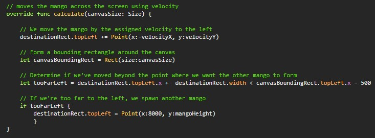
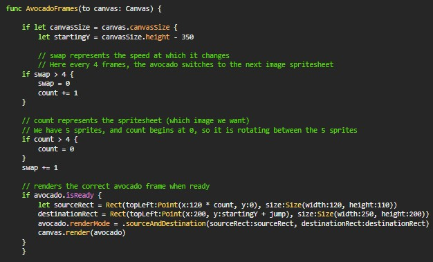
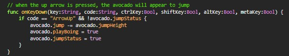
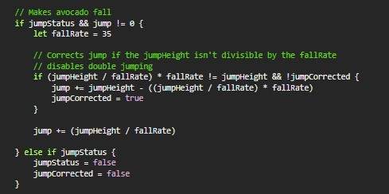

Towards the end of my Computer Science I course, we were tasked with creating an Independent Study Project (ISP) using swift. I collaborated with two of my classmates (Sophie Hews and Jana Daouk) to create a game called "Lavacado Run".
In the game, you play as Princess Avocado and have to jump through various obstacles to save Prince Lettuce. It is an infinite runner so the game keeps going until your character dies.
Our game was inspired by Chrome's dinosaur game in terms of gameplay. For the story and aesthetic, we decided to go with a vegetable theme and keep the tone humorous.
The entire game was coded in swift. Rather than trying to make the character move, we opted to make it look like the character is moving by making everything else move towards him.
Here is the code for the movement of one of the enemies:
We also needed the character to have a running animation so we created a sprite sheet and had the sourceRect move every 4 frames to make it look like it was running:
It also needed to jump so we added a jumping and falling animation by changing the character's y coordinate:
 Lastly, the game needed to transition between the start, game, and end so we used scenes to make these transitions happen. Here is the code for the transition to the death screen as well as other code that is run when the player dies:

Upon completion, our fine project was overall a success, but despite that, their were some issues. Because the positions of the obstacles were randomized it was very difficult to get them so that they would be always possible to avoid them. After adjusting the speed and position of the obstacles numerous times we managed to get it to where it was possible most of the time to avoid the obstacles, but it was still very common to run into situations where the player couldn't avoid death. However despite these setbacks the game's overall presentation looked great, the character really looked like she was moving and the sound effects and images gave the game a unique charm.